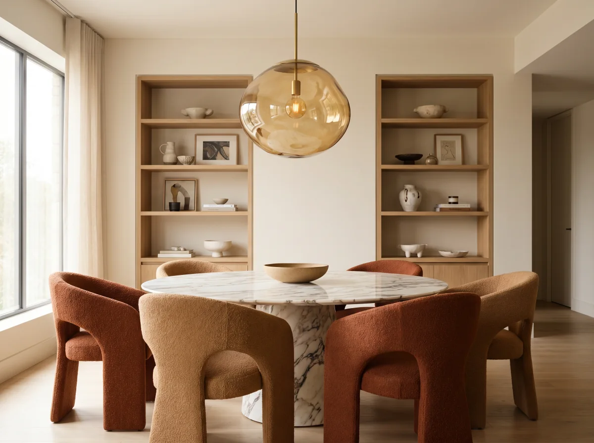

Who it helps
A space designed around real use.
The layout feels awkward
空间动线不顺
Clarify zones, circulation and furniture before visual styling.
先整理区域、动线与家具，再处理视觉风格。
Decisions are hard to imagine
无法想象完成效果
Use drawings and visualisation to make important choices visible earlier.
通过图纸与效果图，让重要决定更早被看见。
Function and atmosphere feel disconnected
功能与氛围不一致
Bring practical needs, material direction and mood into one plan.
把实际需求、材料方向和空间氛围放进同一套规划。
Selected Residential Study
A warm, practical interior direction focused on proportion, storage, movement and calm material choices.
围绕比例、收纳、动线与沉稳材料选择的住宅空间方向。
Service scope
Plan before making expensive decisions.
Discover
Space, users, habits, budget direction and constraints.
了解空间、使用者、生活习惯、预算方向与限制。
Define
Layout, circulation, storage and visual direction.
确定布局、动线、收纳与视觉方向。
Create
Planning drawings and selected visualisations.
完成规划图与所需视觉效果图。
Deliver
Review the design package and next-stage requirements.
检查设计资料并说明下一阶段所需内容。
FAQ
Before planning begins.
Do you take every interior project?每个室内项目都会接吗？
No. Interior work is selected based on scope, location and fit.
不会，会根据范围、地点和适合程度选择项目。
Can we start with planning only?可以只先做规划吗？
Yes. The first step can focus on layout and direction before a larger commitment.
可以，先处理布局与方向，再决定是否进入更大范围。